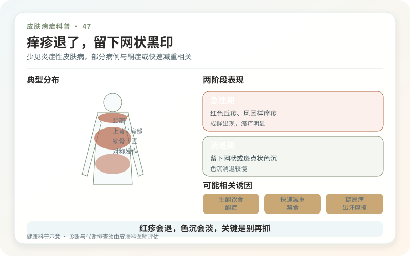
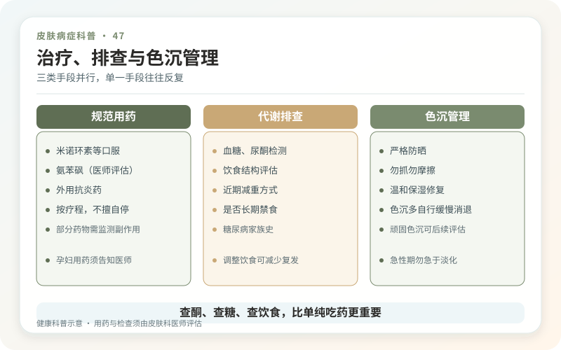

色素性痒疹，英文prurigo pigmentosa，是一种相对少见的炎症性皮肤病，较多见于年轻人。典型过程是颈部、胸前、上背出现对称、非常痒的红色丘疹，逐渐融合成网状；急性炎症退去后，留下棕褐色网状色素沉着。
它不是所有“抓后变黑”的统称。原文件里的通俗描述容易和结节性痒疹、炎症后色沉混淆，因此正式发布必须保留规范病名和少见病边界。

为什么它和生酮饮食常被一起提到？
部分病例发生在生酮饮食、禁食、糖尿病酮症、快速减重或其他酮体升高状态下，恢复碳水摄入后可改善。但这不是所有患者的唯一病因，也不能用“吃一碗饭就确诊”。摩擦、出汗等还可能参与。
如果近期极端低碳、快速减重，同时有口渴、多尿、恶心、腹痛、呼吸深快或意识不适，要及时就医排除糖尿病酮症酸中毒，不能只看皮肤。

不同阶段外观不同，活检位置很重要
早期可像湿疹、接触性皮炎、虫咬或荨麻疹；出现网状色沉后又可能像色素性扁平苔藓、融合性网状乳头瘤病或皮肤淀粉样变。医生会根据分布、演变和饮食代谢史判断，常在新鲜活动皮疹处做活检；只取陈旧黑印，病理信息可能不足。
真菌检查、血糖和酮体等按线索选择。不要用“色素性痒疹”给所有顽固色沉贴标签。
治疗重点是控制急性炎症和诱因
四环素类或氨苯砜等具有抗炎作用的药物在文献中常用于治疗，但它们涉及年龄、妊娠、肝肾、血液和药物过敏等风险，必须由医生处方。外用激素可能缓解部分炎症，却通常不是这一疾病最有针对性的单独方案。
若与酮症或极端节食相关，恢复均衡饮食、纠正代谢状态很重要。想继续体重管理，可在营养和医学专业人员指导下调整，不应在皮疹反复时硬扛“生酮适应期”。
黑印消退比红疹慢
急性皮疹被控制后，色素常需数月逐渐变淡。温和清洁、减少摩擦和防晒有助稳定，不要在炎症刚退时立刻高强度刷酸、激光“追黑印”，二次炎症可能让网状色差更持久。
复发可发生，记录饮食、体重变化、发作时间和照片有助确认关联。出现发热、大片水疱、黏膜受累或用药后全身不适，要立即就医。
色素性痒疹的关键是把少见病认准：看急性红疹到网状色沉的时间序列，而不是只盯最终的黑。
先核对“痒疹”的具体含义
色素性痒疹通常指prurigo pigmentosa，常见突发瘙痒性红色丘疹，呈网状分布，炎症退后留下网状色沉；它与结节性痒疹不是同一种病。若原始文档只是泛称“色素性痒疹”，必须结合皮疹形态、部位和病程重新确认。只剩褐色印时远程看图尤其容易误判，发作期照片和病史非常重要。
极低碳或生酮经历值得主动说明
部分患者发病与酮症状态相关，包括严格低碳饮食、快速减重、禁食或糖尿病等，但有关联不等于每位患者都由饮食引起。记录发疹前后的饮食、体重、口渴多尿、疾病和药物，可以帮助医生判断是否需要代谢检查。若伴恶心呕吐、腹痛、呼吸异常、明显乏力或糖尿病血糖失控，应按急症评估，不要只把它当皮肤过敏。
抗炎治疗和诱因调整要并行
医生可能根据临床和活检使用特定抗炎药物，并评估禁忌与不良反应。自行长期吃抗生素或只做美白都不合适：前者需要诊断依据，后者不能阻止活动期新疹。若确与极端饮食相关，应在保证营养和代谢安全的前提下调整，而不是在网上照抄“加一顿碳水就治愈”。评价重点是新发和瘙痒是否停止，色沉恢复通常更慢。
复发管理要留下可验证线索
每次发作记录饮食变化、禁食时间、运动量、疾病和月经等背景，并保存红疹期照片。一次在吃碳水后缓解，不能单独证明因果；多次重复关系才更有信息。若医生建议调整饮食，目标应是结束不必要的酮症风险并保持营养，而不是从一个极端跳到另一个极端。
色沉期注意防晒和减少摩擦，避免为了网状印记反复刷酸。若旧印不再痒且无新红疹，通常说明活动性问题与外观残留已经分离。治疗重点也应随阶段改变：活动期止炎、查诱因，稳定期才讨论色素恢复。